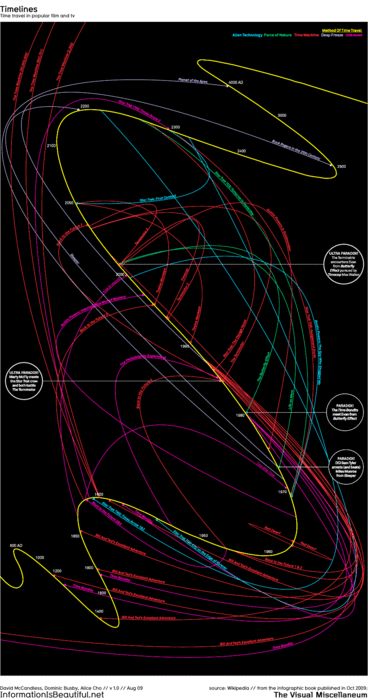

Sat, 21 Aug 2010 20:02:00 · Infographic · film · movies · TV · Time Travel · Sci-fi
Infographic: Time Travel in Movies and TV
For those who loves Infographic, and a Sci-Fi junkie, here’s an awesome visualization of time travel plots in various films and TV programmes.

For more geeky behind-the-scenes process of how this fantastic Infographic was created, see here: http://is.gd/euJwY
~ This awesome Infographic is brought to you by David McCandless from InformationIsBeautiful.net.